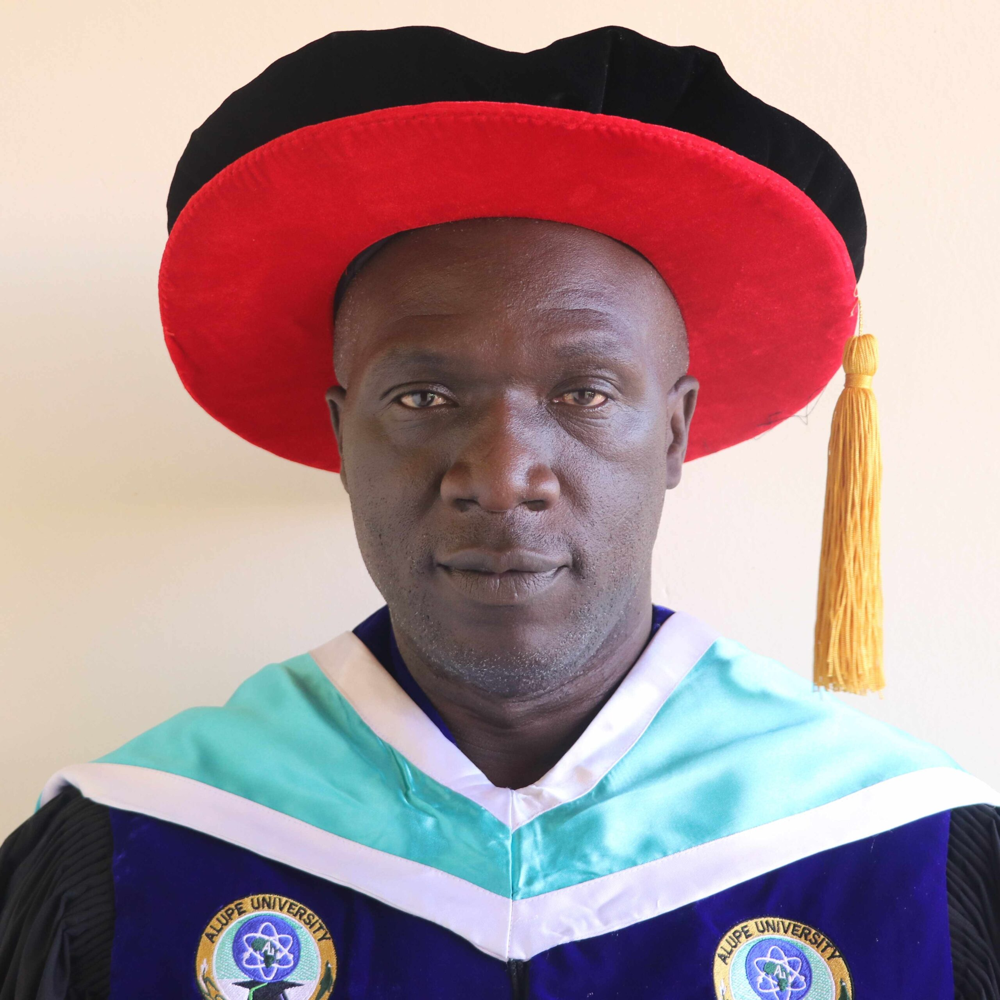

Dr. Charles Owuor Omoga
Dedicated educator and researcher committed to fostering a stimulating learning environment and advancing information systems research. Over eight years of teaching experience at doctoral, masters and undergraduate levels. Chair, Department of Management Science at Alupe University.
Curriculum Vitae – Overview
Personal
- Birth: 1st July 1971
- Marital: Married
- Address: Alupe University, P.O. Box 845-50400, Busia
- Mobile: 0719571797
- Email: Omogac71@Yahoo.Com
- Current post: Senior Lecturer, Alupe University
Education
- PhD Business Info. Systems, JOOUST (2018)
- MBA (MIS), Maseno Univ. (2012)
- B.Ed (Science) Kampala Univ. (2010) – Upper second
Objective
Commitment to fostering a stimulating learning environment and contributing to the advancement of information systems research.
M-KIM · Kenya Institute of Management
Administrative & committee responsibilities
Research reviewer / examiner
✔ Reviewer – Alupe University Research Grant Proposal (2020–21, 2023/24)
✔ External thesis examiner – Kisii University, Dept. of Information Science (2019)
Projects & Initiatives
Bachelor of Business Information Technology (BBIT)
Developed the undergraduate curriculum for the BBIT program at Alupe University – shaping the next generation of information technology and systems professionals.
Curriculum design · 2021–2022Bachelor of Business Analytics and Information Systems Management (BBAISM)
Led the development of the new BBAISM degree programme, integrating data analytics, information systems and management science.
New programme · 2023Master of Business Information Systems (MBIS)
Designed the postgraduate curriculum to equip students with advanced skills in information systems strategy and research.
Postgraduate curriculum · 2024Alupe University Sacco Website
Currently developing a dynamic, secure website for the Alupe University Savings and Credit Cooperative (Sacco) to enhance member services.
Web development · ongoing 2025Publications
Work experience & teaching
Senior Lecturer (Business Information Systems)
Alupe University
Lecturer, Business Information Systems
Alupe University
Tutorial Fellow, Business Information Systems
Alupe University
Part-time lecturer
JOOUST – Busia Learning Centre
Teacher (full time) TSC – Nyamninia School
Part time lecturer, Mount Kenya University (Kakamega)
Part time (Ramogi College of Education – holiday)
Comptia College, Kisumu (part time)
Rongo School (full time TSC) & Nyanza Christian TTC part time
Withur School (TSC)
Omore School (TSC)
Professional development & training
Skills & competencies
- ✔ Extensive IT & computing teaching
- ✔ Information systems research (doctoral level)
- ✔ Fluent English & Kiswahili · analytical, leadership
- ✔ Strong writing & oral communication
- ✔ Team player
- ✔ Hobbies: Basketball, Computing, religious activities
Community service
2024–date: PATRON – Ulumbi Community Welfare Group
Interests
Information Technology · Religious Activities · Peace & Conflict Resolution · Environmental Conservation
Referees
Prof. Annerty Makokha
Dean SBEHRD, Alupe University
Prof. Silvance Abeka
Dean, Informatics, JOOUST · 0710581009
Prof. Samuel Liyala
Chair, Information Systems, JOOUST · 0718813320